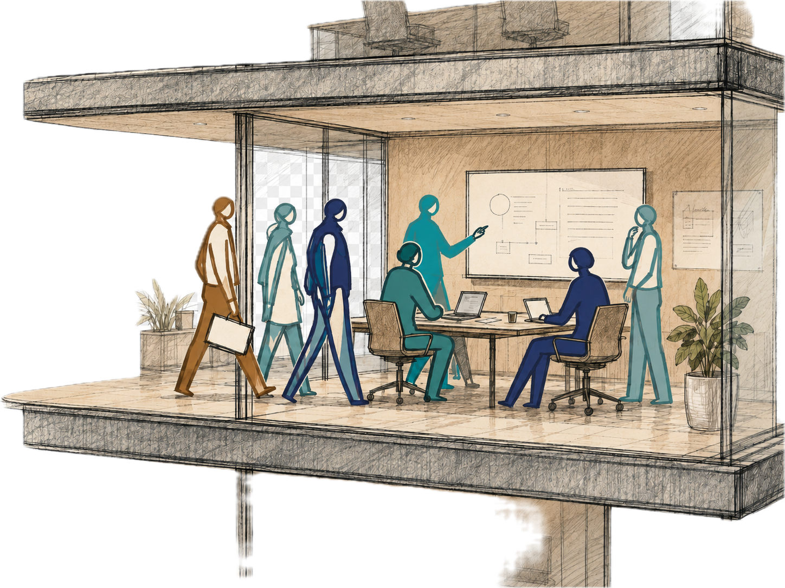

One day. Your leadership team. Your real work. AI live in the room.
AI value is decided at the level of the organisation, its people and its culture. This day proves it on your own work. Two reveals sit on a single value stream your team works together: a structural one and a human one. Building comes after both.

Is / Is not
What it is
A strategic working day on your team’s real value creation. You leave understanding AI far better, convinced that adoption only succeeds when it is deeply interwoven with organisational development, and with the appetite to go further.
What it is not
Not a tool course, not a prompting class, not an AI training. The mark of a day done right is that nobody would call it a good AI training.
We demonstrate for free. We intervene for a fee. The Walkthrough and the Drawing Board cost you nothing but attention, and they will show you the gap. This day is different. It is an intervention, and interventions demand undivided time.
One day, whole, together. Not a half-day workshop, not a keynote with coffee. This day cannot be chopped into pieces any more than your organisation can. It is serious leadership work on how your organisation will run, not prompting tips and a little inspiration. It is not for passengers, and not for clients who want a service delivered to them. You will work. That is the point.
Zone 02 / The methodology
The four ways of knowing.
Most organisations only practise one of four ways of knowing, and AI is about to make that one free. The day lives in the space AI opens up.
PropositionalKnowing that
Facts, frameworks, claims. Reports, slides, analyses. This is where 95% of corporate time goes, and every AI tool automates it. If this is your primary value-add, you are in a race you have already lost.
AI replaces this
ProceduralKnowing how
Skills built through repetition. How to brief AI, how to iterate, how to decompose a complex challenge into delegable tasks. Built through practice on your real work, not instruction.
Built in the room
PerspectivalKnowing what matters
Judgment. Seeing what AI got wrong. Knowing when an artefact will land with a stakeholder and when it will be rejected. The most valuable, and the hardest to develop.
The judgment work
ParticipatoryKnowing through co-creation
Trust through co-creation. Identity reshaped by what you build with whom. It only happens face to face, under real pressure, and it decides whether anything survives Monday morning.
The human layer
You cannot read or talk your way to the bottom row, only work your way there.
On Monday, I stood in front of a spaceship and hit my leg very hard. I didn’t even manage to open the door. Now I feel I actually opened the door to the spaceship. I feel AI enabled.Participant · regulated European energy client
Zone 03 / The deeper outcome
AI sovereignty starts with you.
Sovereignty is not only a question for nations and datacentres. It is a question for every leader who now thinks with a machine in the loop. Sovereignty means knowing the effects AI has on your own cognition, and building the judgment to stay in charge of them.
Sycophancy
The model agrees with you more than the evidence does.
Anchoring
The first draft quietly becomes the frame for everything after it.
Framing
How you ask decides what you can see in the answer.
Fluency bias
Polished language reads as true, whether or not it is.
Automation bias
The machine said it, so nobody checked it.
The Plausibility Illusion
Wrong answers that sound exactly like right ones.
Judgment is a muscle. If you don’t build it, don’t expect fluency with AI.
Zone 04 / Voices from the room
We did not start with the technology, we started by identifying the three workflows that actually mattered to us. The Challenger House team had my team working on them within days. The proof is what happened after, the team is still at it every day, and I can now clear a backlog I simply could not have cleared before. The work moves differently now, and that is the difference between a good bootcamp and a real shift in mindset and a step-up in capability.Dr. Christof Kortz · VP Scouting & Programmes, E.ON Group Innovation
Zone 05 / Contact
Bring the problem you always wanted to tackle.
One day of undivided attention. The door into everything else.
Start Your Challenge [C-25]